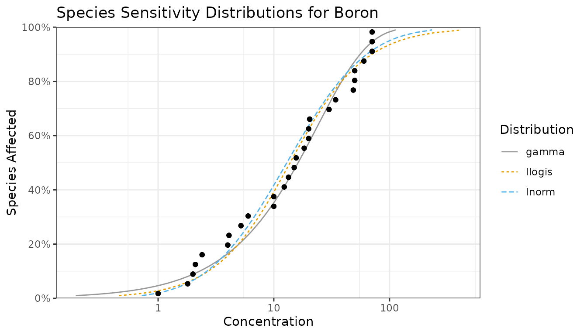
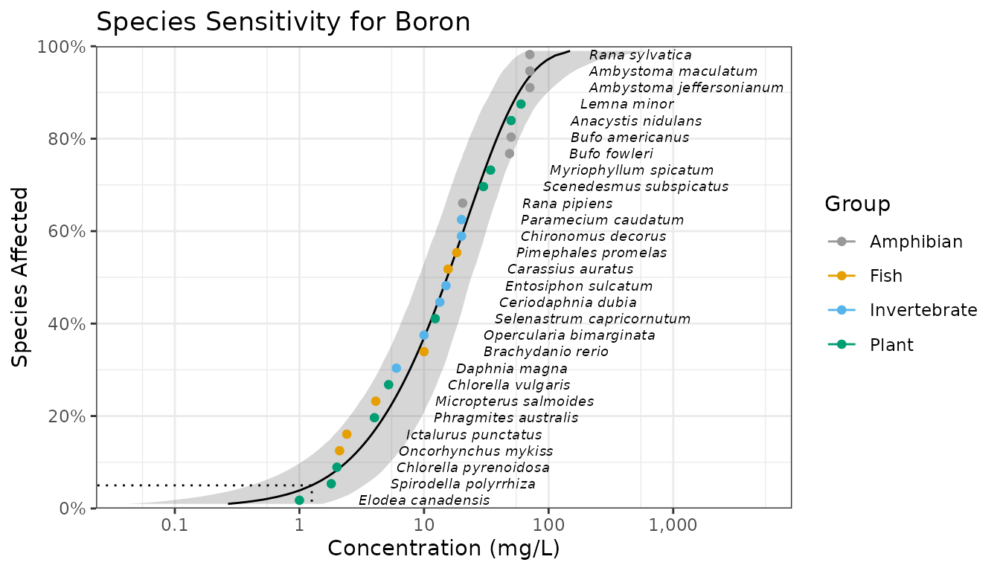
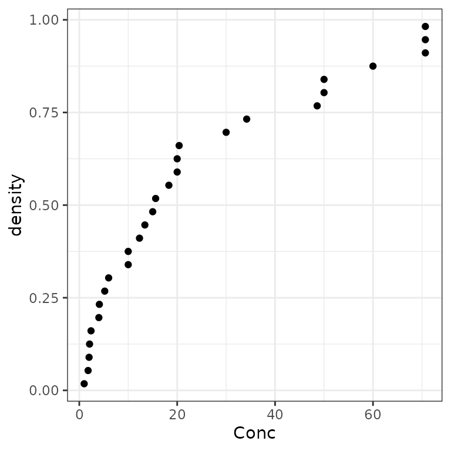
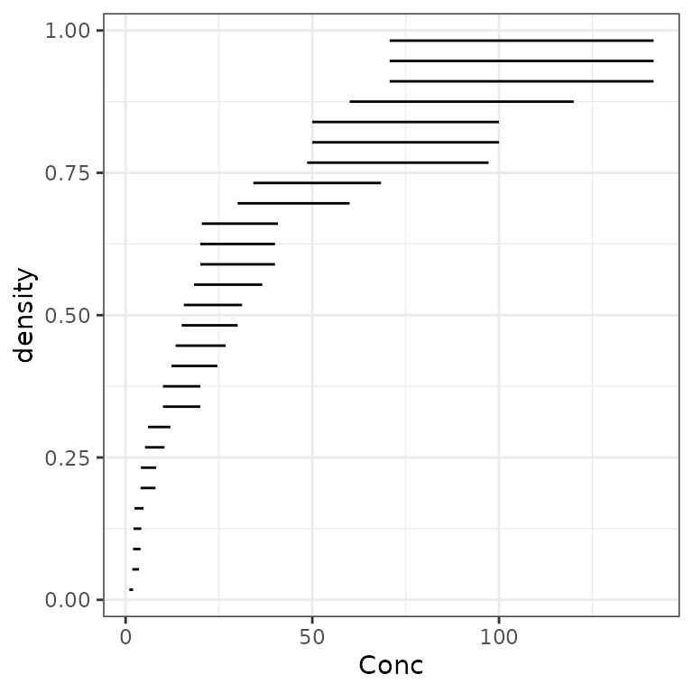
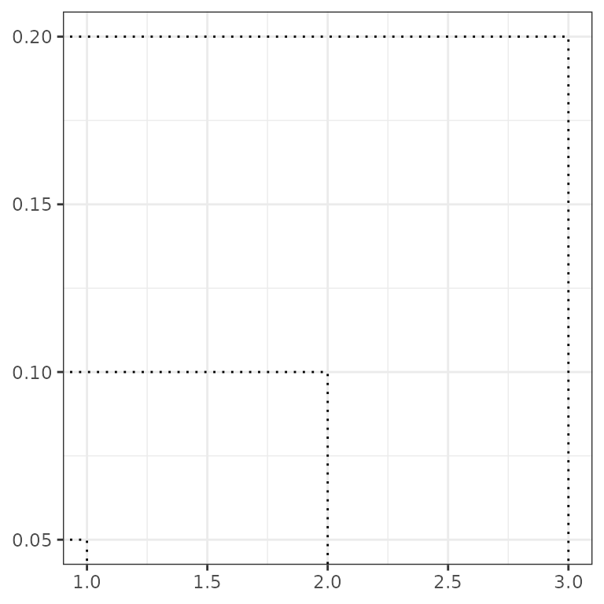
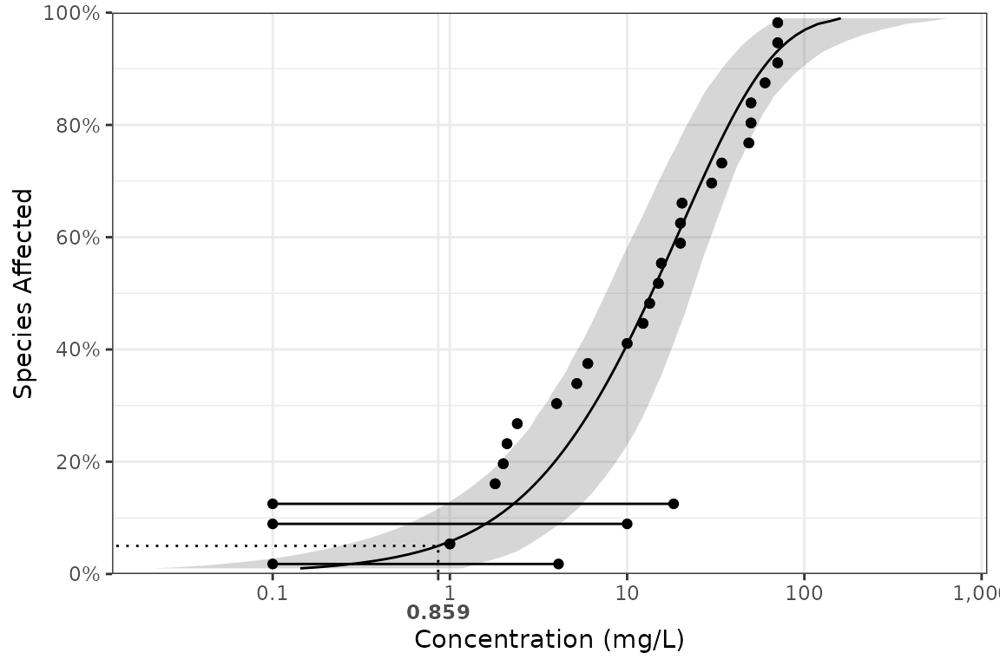

Introduction
ssdtools is an R package to fit Species Sensitivity
Distributions (SSDs) using Maximum Likelihood and model averaging.
SSDs are cumulative probability distributions that are used to estimate the percent of species that are affected by a given concentration of a chemical. The concentration that affects 5% of the species is referred to as the 5% Hazard Concentration (\(HC_5\)). For more information on SSDs the reader is referred to Posthuma, Suter II, and Traas (2001).
In order to use ssdtools you need to install R (see
below) or use the Shiny app. The shiny app
includes a user guide. This vignette is a user manual for the R
package.
Philosophy
ssdtools provides the key functionality required to fit
SSDs using Maximum Likelihood and model averaging in R. It is intended
to be used in conjunction with tidyverse packages such as
readr to input data, tidyr and
dplyr to group and manipulate data and ggplot2
(Wickham 2016) to plot data. As such it
endeavors to fulfill the tidyverse manifesto.
Installing
In order to install R (R Core Team 2018) the appropriate binary for the users operating system should be downloaded from CRAN and then installed.
Once R is installed, the ssdtools package can be
installed (together with the tidyverse) by executing the following code
at the R console
install.packages(c("ssdtools", "tidyverse"))The ssdtools package (and ggplot2 package) can then be
loaded into the current session using
Getting Help
To get additional information on a particular function just type
? followed by the name of the function at the R console.
For example ?ssd_gof brings up the R documentation for the
ssdtools goodness of fit function.
For more information on using R the reader is referred to R for Data Science (Wickham and Grolemund 2016).
If you discover a bug in ssdtools please file an issue
with a reprex
(repeatable example) at https://github.com/bcgov/ssdtools/issues.
Inputting Data
Once the ssdtools package has been loaded the next task
is to input some data. An easy way to do this is to save the
concentration data for a single chemical as a column called
Conc in a comma separated file (.csv). Each
row should be the sensitivity concentration for a separate species. If
species and/or group information is available then this can be saved as
Species and Group columns. The
.csv file can then be read into R using the following
data <- read_csv(file = "path/to/file.csv")For the purposes of this manual we use the CCME dataset for boron.
ccme_boron <- ssddata::ccme_boron
print(ccme_boron)
#> # A tibble: 28 × 5
#> Chemical Species Conc Group Units
#> <chr> <chr> <dbl> <fct> <chr>
#> 1 Boron Oncorhynchus mykiss 2.1 Fish mg/L
#> 2 Boron Ictalurus punctatus 2.4 Fish mg/L
#> 3 Boron Micropterus salmoides 4.1 Fish mg/L
#> 4 Boron Brachydanio rerio 10 Fish mg/L
#> 5 Boron Carassius auratus 15.6 Fish mg/L
#> 6 Boron Pimephales promelas 18.3 Fish mg/L
#> 7 Boron Daphnia magna 6 Invertebrate mg/L
#> 8 Boron Opercularia bimarginata 10 Invertebrate mg/L
#> 9 Boron Ceriodaphnia dubia 13.4 Invertebrate mg/L
#> 10 Boron Entosiphon sulcatum 15 Invertebrate mg/L
#> # ℹ 18 more rowsFitting Distributions
The function ssd_fit_dists() inputs a data frame and
fits one or more distributions. The user can specify a subset of the
following 10 distributions
ssd_dists_all()
#> [1] "burrIII3" "gamma" "gompertz" "invpareto"
#> [5] "lgumbel" "llogis" "llogis_llogis" "lnorm"
#> [9] "lnorm_lnorm" "weibull"using the dists argument.
fits <- ssd_fit_dists(ccme_boron, dists = c("llogis", "lnorm", "gamma"))Coefficients
The estimates for the various terms can be extracted using the
tidyverse generic tidy function (or the base R generic
coef function).
tidy(fits)
#> # A tibble: 6 × 4
#> dist term est se
#> <chr> <chr> <dbl> <dbl>
#> 1 llogis locationlog 2.63 0.248
#> 2 llogis scalelog 0.740 0.114
#> 3 lnorm meanlog 2.56 0.235
#> 4 lnorm sdlog 1.24 0.166
#> 5 gamma scale 25.1 7.64
#> 6 gamma shape 0.950 0.223Plots
It is generally more informative to plot the fits using the
autoplot generic function (a wrapper on
ssd_plot_cdf()). As autoplot returns a
ggplot object it can be modified prior to plotting.
theme_set(theme_bw()) # set plot theme
autoplot(fits) +
ggtitle("Species Sensitivity Distributions for Boron") +
scale_colour_ssd()
Selecting One Distribution
Given multiple distributions the user is faced with choosing the “best” distribution (or as discussed below averaging the results weighted by the fit).
ssd_gof(fits)
#> # A tibble: 3 × 9
#> dist ad ks cvm aic aicc bic delta weight
#> <chr> <dbl> <dbl> <dbl> <dbl> <dbl> <dbl> <dbl> <dbl>
#> 1 llogis 0.487 0.0994 0.0595 241. 241. 244. 3.38 0.11
#> 2 lnorm 0.507 0.107 0.0703 239. 240. 242. 1.40 0.296
#> 3 gamma 0.440 0.117 0.0554 238. 238. 240. 0 0.595The ssd_gof() function returns three test statistics
that can be used to evaluate the fit of the various distributions to the
data.
-
Anderson-Darling
(
ad) statistic, -
Kolmogorov-Smirnov
(
ks) statistic and -
Cramer-von
Mises (
cvm) statistic
and three information criteria
- Akaike’s Information Criterion (
aic), - Akaike’s Information Criterion corrected for sample size
(
aicc) and - Bayesian Information Criterion (
bic)
Note if ssd_gof() is called with
pvalue = TRUE then the p-values rather than the statistics
are returned for the ad, ks and cvm tests.
Following Burnham and Anderson (2002)
we recommend the aicc for model selection. The best
predictive model is that with the lowest aicc (indicated by
the model with a delta value of 0.000 in the goodness of
fit table). In the current example the best predictive model is the
gamma distribution but the lnorm distribution has some support.
For further information on the advantages of an information theoretic approach in the context of selecting SSDs the reader is referred to Fox et al. (2021).
Averaging Multiple Distributions
Often other distributions will fit the data almost as well as the
best distribution as evidenced by delta values < 2 (Burnham and Anderson 2002). In this situation
the recommended approach is to estimate the average fit based on the
relative weights of the distributions (Burnham
and Anderson 2002). The aicc based weights are
indicated by the weight column in the goodness of fit
table. In the current example, the gamma and log-normal distributions
have delta values < 2.
Estimating the Fit
The predict function can be used to generate
model-averaged (or if average = FALSE individual) estimates
by parametric bootstrapping. Model averaging is based on
aicc unless the data censored is which case
aicc in undefined. In this situation model averaging is
only possible if the distributions have the same number of parameters.
Parametric bootstrapping is computationally intensive. To bootstrap for
each distribution in parallel register the future backend and then
select the evaluation strategy.
doFuture::registerDoFuture()
future::plan(future::multisession)
set.seed(99)
boron_pred <- predict(fits, ci = TRUE)The resultant object is a data frame of the estimated concentration
(est) with standard error (se) and lower
(lcl) and upper (ucl) 95% confidence limits
(CLs) by percent of species affected (percent). The object
includes the number of bootstraps (nboot) data sets
generated as well as the proportion of the data sets that successfully
fitted (pboot). There is no requirement for the bootstrap
samples to converge.
boron_pred
#> # A tibble: 99 × 11
#> dist proportion est se lcl ucl wt method nboot pboot samples
#> <chr> <dbl> <dbl> <dbl> <dbl> <dbl> <dbl> <chr> <dbl> <dbl> <I<lis>
#> 1 average 0.01 0.267 0.401 0.0418 1.53 1 parame… 1000 0.999 <dbl>
#> 2 average 0.02 0.531 0.517 0.110 2.03 1 parame… 1000 0.999 <dbl>
#> 3 average 0.03 0.783 0.614 0.198 2.50 1 parame… 1000 0.999 <dbl>
#> 4 average 0.04 1.02 0.700 0.300 2.90 1 parame… 1000 0.999 <dbl>
#> 5 average 0.05 1.26 0.781 0.407 3.29 1 parame… 1000 0.999 <dbl>
#> 6 average 0.06 1.48 0.859 0.520 3.72 1 parame… 1000 0.999 <dbl>
#> 7 average 0.07 1.71 0.933 0.645 4.16 1 parame… 1000 0.999 <dbl>
#> 8 average 0.08 1.93 1.01 0.768 4.58 1 parame… 1000 0.999 <dbl>
#> 9 average 0.09 2.16 1.08 0.896 4.95 1 parame… 1000 0.999 <dbl>
#> 10 average 0.1 2.38 1.15 1.03 5.39 1 parame… 1000 0.999 <dbl>
#> # ℹ 89 more rowsThe data frame of the estimates can then be plotted together with the
original data using the ssd_plot() function to summarize an
analysis. Once again the returned object is a ggplot object
which can be customized prior to plotting.
ssd_plot(ccme_boron, boron_pred,
color = "Group", label = "Species",
xlab = "Concentration (mg/L)", ribbon = TRUE
) +
expand_limits(x = 5000) + # to ensure the species labels fit
ggtitle("Species Sensitivity for Boron") +
scale_colour_ssd()
In the above plot the model-averaged 95% confidence interval is indicated by the shaded band and the model-averaged 5% Hazard Concentration (\(HC_5\)) by the dotted line. Hazard concentrations are discussed below.
Hazard Concentrations
The 5% hazard concentration (\(HC_5\)) is the concentration that affects 5% of the species tested.
Plotting
The ssdtools package provides four ggplot geoms to allow
you construct your own plots.
The first is geom_ssdpoint() which plots species
sensitivity data
ggplot(ccme_boron) +
geom_ssdpoint(aes(x = Conc))
The second is geom_ssdsegments() which plots the range
of censored species sensitivity data
ggplot(ccme_boron) +
geom_ssdsegment(aes(x = Conc, xend = Conc * 2))
The third is geom_xribbon() which plots species
sensitivity confidence intervals
ggplot(boron_pred) +
geom_xribbon(aes(xmin = lcl, xmax = ucl, y = proportion))
And the fourth is geom_hcintersect() which plots hazard
concentrations
ggplot() +
geom_hcintersect(xintercept = c(1, 2, 3), yintercept = c(0.05, 0.1, 0.2))
They can be combined together as follows
gp <- ggplot(boron_pred, aes(x = est)) +
geom_xribbon(aes(xmin = lcl, xmax = ucl, y = proportion), alpha = 0.2) +
geom_line(aes(y = proportion)) +
geom_ssdsegment(data = ccme_boron, aes(x = Conc / 2, xend = Conc * 2)) +
geom_ssdpoint(data = ccme_boron, aes(x = Conc / 2)) +
geom_ssdpoint(data = ccme_boron, aes(x = Conc * 2)) +
scale_y_continuous("Species Affected (%)", labels = scales::percent) +
expand_limits(y = c(0, 1)) +
xlab("Concentration (mg/L)")
print(gp + geom_hcintersect(xintercept = boron_hc5$est, yintercept = 5 / 100))
To log the x-axis add the following code.
gp <- gp + coord_trans(x = "log10") +
scale_x_continuous(
breaks = scales::trans_breaks("log10", function(x) 10^x),
labels = comma_signif
)
print(gp + geom_hcintersect(xintercept = boron_hc5$est, yintercept = 0.05))
The most recent plot can be saved as a file using
ggsave(), which also allows the user to set the
resolution.
ggsave("file_name.png", dpi = 600)References
Licensing
Copyright 2024 Province of British Columbia, Environment and Climate Change Canada, and Australian Government Department of Climate Change, Energy, the Environment and Water
The documentation is released under the CC BY 4.0 License
The code is released under the Apache License 2.0